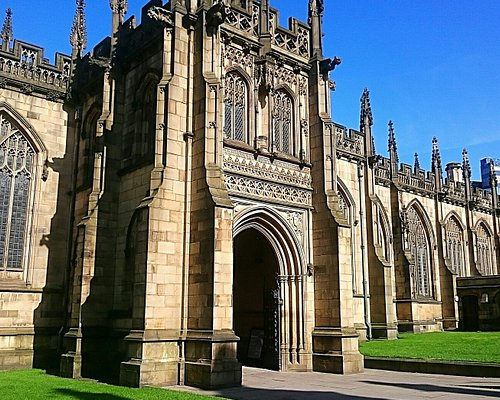

Manchester Tourist Website
Places In Manchester To Visit
Information about Manchester
Manchester is a major city in the northwest of England, with a rich industrial heritage and a thriving cultural scene. It is divided into two parts: Greater Manchester, which is the metropolitan county, and the city of Manchester itself. The city is known for its vibrant music scene, world-class football teams, and a thriving economy.Manchester experienced a population explosion in the 19th century as a result of the industry's explosive growth. Cottonopolis is the name given to the city because of its prominence in the trading and processing of cotton. Significant social and political developments also occurred during this time, such as the rise of labour unions and worker rights campaigns.Manchester Cathedral Manchester Cathedral, sometimes referred to as the Cathedral Church of St. Mary, is a stunning illustration of Gothic design. With a history spanning over eight centuries, the cathedral holds great religious and historical significance in the city. In addition to being a place of worship for centuries, it also serves as a venue for concerts and other cultural activities.Manchester is home to Manchester United and Manchester City, two of the most successful football teams in England with international fan following. Beyond football, rugby, cricket, and tennis are all popular sports in the city.Traditional British fare from Manchester is well-known, including the city's signature fish and chips, filling meat pies, Sunday roasts, and traditional English breakfasts. These well-liked mainstays are served in a lot of the city's restaurants, frequently with a contemporary touch that enhances the eating experience while keeping the spirit of British culinary traditions.
Global Tastes Manchester's food culture is particularly fascinating due to the wide variety of different cuisines available. Due in part to the city's cosmopolitan population, there are many different international flavours represented in the diverse culinary scene. Manchester has a wide variety of international cuisines to choose from, including Chinese dim sum in Chinatown, real Italian pasta in the Northern Quarter, Middle Eastern treats in the bustling markets, and Indian curries in Rusholme's "Curry Mile."
Manchester is the only city in the UK to be listed in National Geographic's renowned "Best of the World" list, which identifies 25 must-see locations to visit each year. Manchester has also been recognised as one of 25 global destinations to be included in the Where to Go 2024 list by prestigious US travel publication AFAR, as well as in the 52 Places to Go list for 2024 by the New York Times.
Manchester Cathedral, built in the 15th century, is one of the city's oldest buildings and offers guided tours to explore its rich history. The museum of science and industry is a popular attraction for people of all ages, exploring the city's industrial heritage with exhibitions on the Industrial Revolution, the modern digital age, and more. The Manchester Art Gallery is home to a large collection of art, including works by Vincent van Gogh and Sir Thomas Lawrence, while the John Rylands Library is one of the UK's greatest research libraries, featuring rare books and manuscripts from the Victorian gothic era. The media and creative industries are at MediaCityUK, home to the BBC, ITV, Lowry Theatre and Manchester International Festival. The Imperial War Museum North showcases the effects of war on people's lives with interactive exhibits and displays, as well as a large collection of military artefacts and aircraft.
Ancient places In Manchester
Known as Mamucium, it was a Roman fort and settlement that dates back to 79 AD. Mamucium was an important strategic base for the Romans, and played an important role in the growth of the region that would become Manchester. Today, you can visit the site at Castlefield where it has been partially restored to give you an insight into the Roman history of the city.
Old Trafford
Old Trafford: Overview Old Trafford, also known as the Theater of Dreams, is an iconic football stadium with 74,262 seats. It was officially opened in 1910 and later underwent several renovations to accommodate the growing fan base and improve spectator facilities. The stadium is owned by Manchester United and managed by the club in partnership with Trafford Council. History and Architecture of Old Trafford Old Trafford was designed by architects Arthur MP Little and A.H.F. Small and built in 1908-1909. The stadium was originally called "Manchester United Ground", but later was renamed Old Trafford in 1909. The name is derived from the nearby Old Trafford Bridge. The original capacity of the stadium was 83,000, making it the largest stadium in the world at the time.